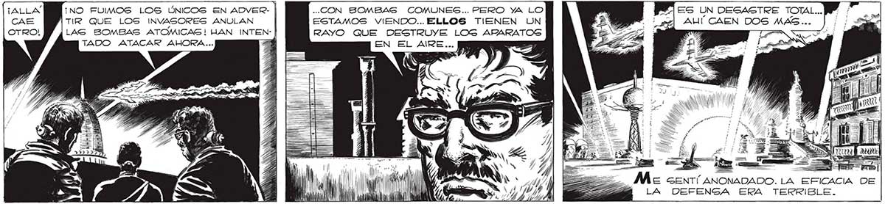

¡NO FUIMOS LOS ÚNICOS EN ADVERTIR QUE LOS LAS BOMBAS ATOMICAS! HAN INTEN- | TADO ATACAR AHORA... A Veroao ave NUESTRA SUERTE ESTABA LIG4 DA EN AQUEL MO: MENTO A LA DEL INVASOR. QUE Sl EL ATAQUE TENIA EXITO TAMBIEN NOSOTROS PERECERIAMOS. PERO ERA SOBRECOGEDOR VER AQUE LLAS SUPERMANOS... .-. CON BOMBAS COMUNES... PERO YA LO le ESTAMOS VIENDO... ELLOS TIENEN UN A. RAYO QUE DESTRUYE LOS ARARATOS : ( EN EL AIRE... ; PY] Es UN DESASTRE TOTAL... MW” AUÍ CAEN DOS MAS... ) ; INVASORES ANULAN SRA Me sentí ANONADADO. LA EFICACIA DE Á LA DEFENGA ERA TERRIBLE. ..DE PESADILLA DANZANDO SOBRE DIALES Y PERILLAS, EN- > VIANDO MUERTE HACIA LO ALTO... YB e E > : = =>"
